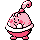

#314
Happiny
Normal
Abilities: Serene Grace, Natural Cure
Base stats BST 220
HP100
Attack5
Defense5
Speed30
Sp. Atk15
Sp. Def65
Evolution
dbbw EVOLVE_HOLDING, OVAL_STONE, CHANSEYLevel-up learnset
LevelMoveType
Lv. 1MinimizeNormal
Lv. 1TackleNormal
Lv. 1MetronomeNormal
Lv. 4Defense CurlNormal
Lv. 8Sweet KissFairy
Lv. 16RolloutRock
Lv. 20CharmNormal
Wild locations
Not found in the parsed wild encounter tables.